Cross-domain reinforcement learning (CDRL) aims to improve the sample
efficiency of reinforcement learning by transferring useful knowledge from a
source domain to a related target domain.
The source domain is often easier or cheaper to collect data from, while the
target domain is the actual environment where efficient learning is desired.
Source Domain
(Data-rich/Low-cost)
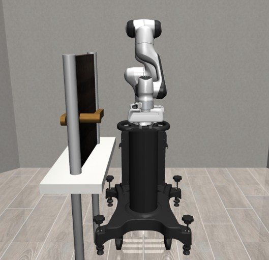
Different in state/action space,
reward function,
and transition probability.
Learning a state/action
mapping function $\phi$, $\psi$ to
utilize source-domain knowledge.
Target Domain
(Data-scarce/High-cost)
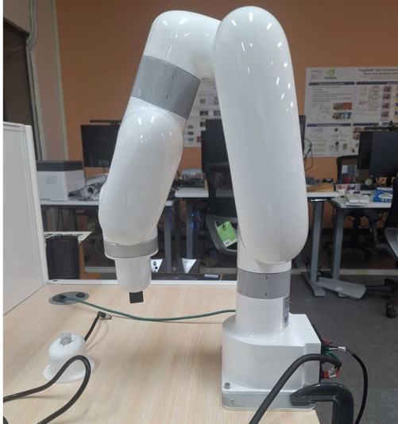
QAvatar is designed to enable reliable knowledge transfer from a source
domain to a target domain. It combines source-domain and target-domain
Q-functions through an adaptive, hyperparameter-free weighting mechanism,
allowing the agent to exploit useful source knowledge while reducing the
risk of negative transfer.
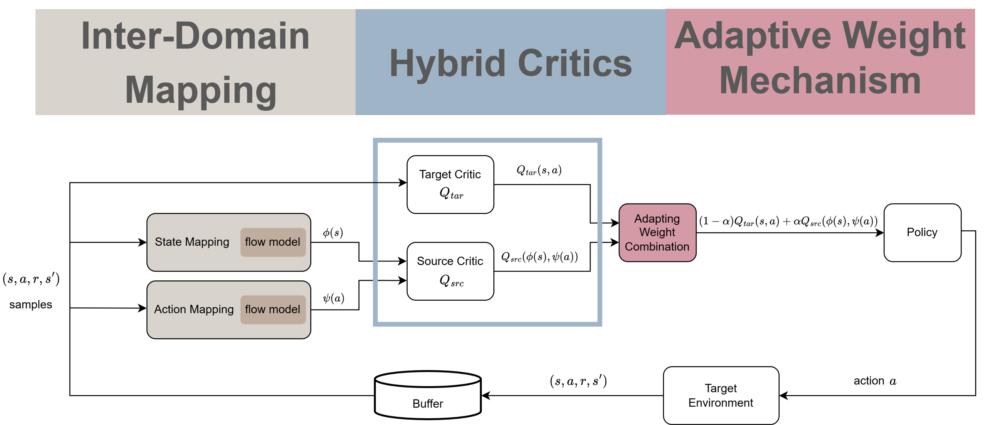
Inter-Domain Mapping
For inter-domain mapping, most prior works enforce transition consistency between the source and target domains. However, this form of dynamic consistency can fail to identify the optimal mapping. Please refer to Appendix D.1 for a detailed MiniGrid example illustrating this idea.
To address this issue, QAvatar learns the inter-domain mappings via cross-domain Bellman consistency. By requiring the mapped source-domain Q-function to satisfy a Bellman-like equation on target-domain transitions and rewards, the learned correspondence becomes task-aware and can distinguish mappings that dynamics consistency cannot.
•
Matches transition dynamics.
•
Can fail to find optimal mappings.
•
Matches Bellman optimality.
•
Discovers reward-aligned mappings.
Hybrid Critics
We adopt an NPG-style policy update with hybrid critics:
$
\pi^{(t+1)}(a \mid s)
\propto
\pi^{(t)}(a \mid s)
\cdot
\exp
\left(
\eta
\left(
(1-\alpha(t))Q_{\mathrm{tar}}^{(t)}(s,a)
+
\alpha(t)Q_{\mathrm{src}}
\left(
\phi^{(t)}(s), \psi^{(t)}(a)
\right)
\right)
\right).
$
Specifically, the target critic $Q^{(t)}_{\text{tar}}$ is trained by minimizing the TD loss, whereas the source critic $Q_{src}$ is pre-trained in the source domain and remains fixed throughout target-domain learning:
Adaptive Weight Mechanism
Proposition (Average Sub-Optimality Gap): Under QAvatar, assuming an exploratory initial distribution, the average sub-optimality over \(T\) iterations is bounded as follows:
$$
\begin{aligned}
&\frac{1}{T}\sum_{t=1}^T
\mathbb{E}_{s \sim \mu_{\mathrm{tar}}}
\Big[V^{\pi^{*}}(s) - V^{\pi^{(t)}}(s)\Big]
\\[2mm]
&\leq
\underbrace{
\frac{\left[\log |\mathcal{A}_{\mathrm{tar}}| + 1\right]}
{\sqrt{T}(1-\gamma)}
}_{(a)}
+
\underbrace{
\frac{C_0}{T}\sum_{t=1}^T
\mathbb{E}_{(s,a) \sim d^{\pi^{(t)}}}
\left[
\left|
(1-\alpha(t))Q^{(t)}_{\mathrm{tar}}(s,a)
+\alpha(t)Q_{\mathrm{src}}(\phi^{(t)}(s),\psi^{(t)}(a))
- Q^{\pi^{(t)}}(s,a)
\right|
\right]
}_{(b)}
\\[2mm]
&\leq
\underbrace{
\frac{\left[\log |\mathcal{A}_{\mathrm{tar}}| + 1\right]}
{\sqrt{T}(1-\gamma)}
}_{(a)}
+
\underbrace{
\frac{C_1}{T}\sum_{t=1}^T
\Big(
\alpha(t)
\lVert
\epsilon_{\mathrm{cd}}
(Q_{\mathrm{src}}, \phi^{(t)}, \psi^{(t)})
\rVert_{d^{\pi^{(t)}}}
+
(1-\alpha(t))
\lVert
\epsilon_{\mathrm{td}}^{(t)}
\rVert_{d^{\pi^{(t)}}}
\Big)
}_{(c)}
\end{aligned}
,where
\begin{aligned}
&\|\epsilon_{\mathrm{td}}^{(t)}\|_{d^{\pi^{(t)}}}
:=
\mathbb{E}_{(s,a)\sim d^{\pi^{(t)}}}
\Big[
\Big|
Q^{(t)}_{\mathrm{tar}}(s,a)
- r_{\mathrm{tar}}(s,a)
-
\gamma
\mathbb{E}_{\substack{
s'\sim P_{\mathrm{tar}}(\cdot\rvert s,a)\\
a'\sim \pi^{(t)}(\cdot\rvert s')
}}
[
Q^{(t)}_{\mathrm{tar}}(s',a')
]
\Big|
\Big],
\\[4pt]
&\|\epsilon_{\mathrm{cd}}(Q_{\mathrm{src}},\phi,\psi)\|_{d^{\pi^{(t)}}}
:=
\mathbb{E}_{(s,a)\sim d^{\pi^{(t)}}}
\Big[
\Big|
Q_{\mathrm{src}}(\phi^{(t)}(s),\psi^{(t)}(a))
- r_{\mathrm{tar}}(s,a)
-
\gamma
\mathbb{E}_{\substack{
s'\sim P_{\mathrm{tar}}(\cdot\rvert s,a)\\
a'\sim \pi^{(t)}(\cdot\rvert s')
}}
[
Q_{\mathrm{src}}(\phi^{(t)}(s'),\psi^{(t)}(a'))
]
\Big|
\Big].
\end{aligned}
$$
Based on the average sub-optimality gap proposition, at each iteration $t$, term (c) can be minimized by choosing $\alpha(t)$ as an indicator function; that is, setting it to 1 when
$\lVert\epsilon_{\text{cd}}(Q_{\text{src}}, \phi^{(t)}, \psi^{(t)})\rVert_{d^{\pi^{(t)}}} < \lVert\epsilon_{\text{td}}^{(t)}\rVert_{d^{\pi^{(t)}}}$
, and to 0 otherwise. In practice, estimating these two error terms can be noisy, so using an indicator function may lead to large fluctuations in $\alpha(t)$ and unstable training. To address this issue, we propose a smoother variant: \[\alpha(t) = \lVert\epsilon_{\text{td}}^{(t)}\rVert_{d^{\pi^{(t)}}}/(\lVert\epsilon_{\text{cd}}(Q_{\text{src}}, \phi^{(t)}, \psi^{(t)})\rVert_{d^{\pi^{(t)}}} + \lVert\epsilon_{\text{td}}^{(t)}\rVert_{d^{\pi^{(t)}}}).\]
Notably, this design is hyperparameter-free and incurs minimal deployment overhead.
Experimental Results
Evaluation Environments
Source and target domains are evaluated across locomotion, robot manipulation,
and navigation tasks.
Evaluation Results
Learning Curve
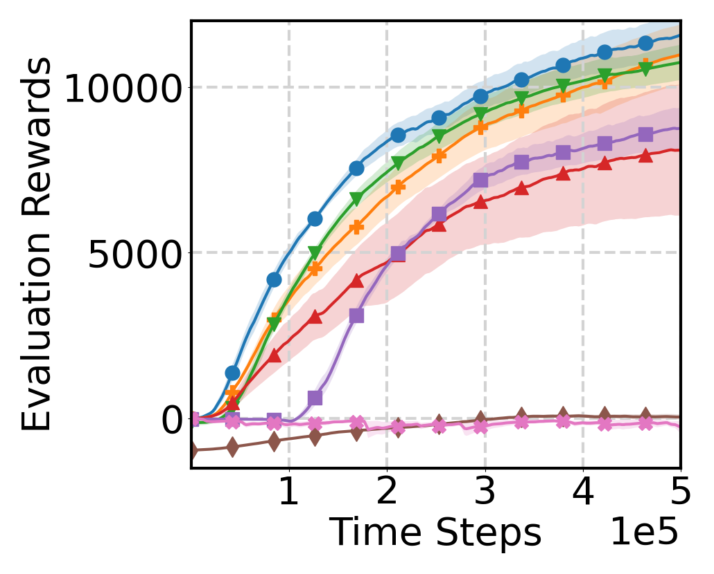
(a) HalfCheetah
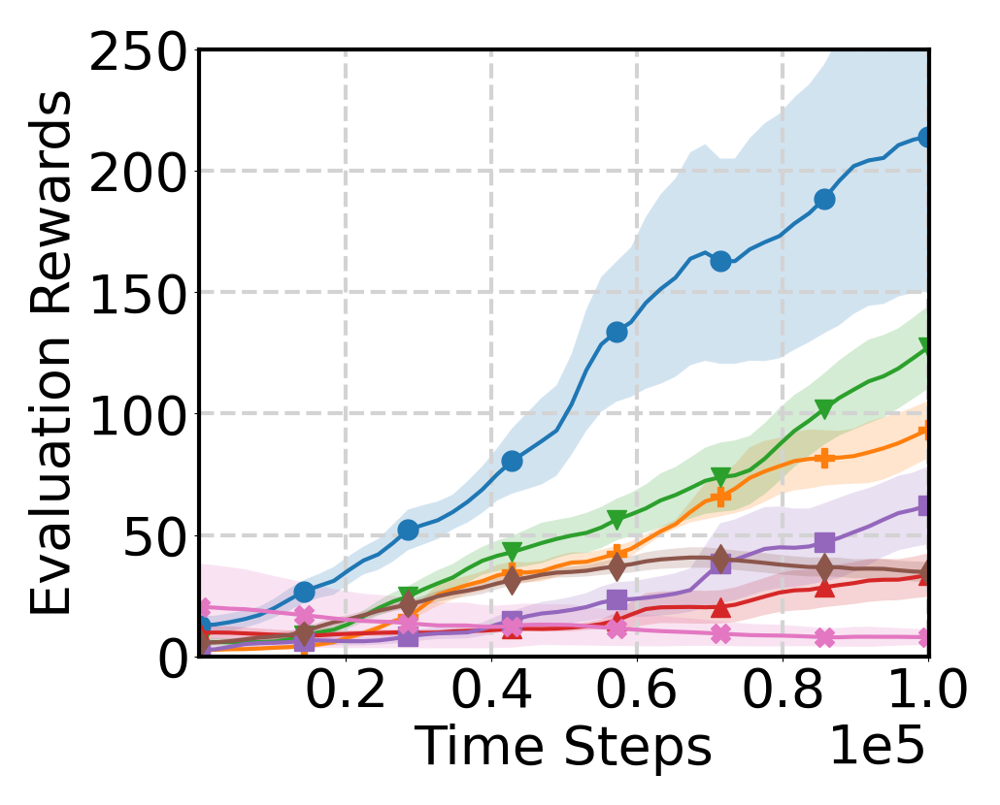
(c) Door Opening
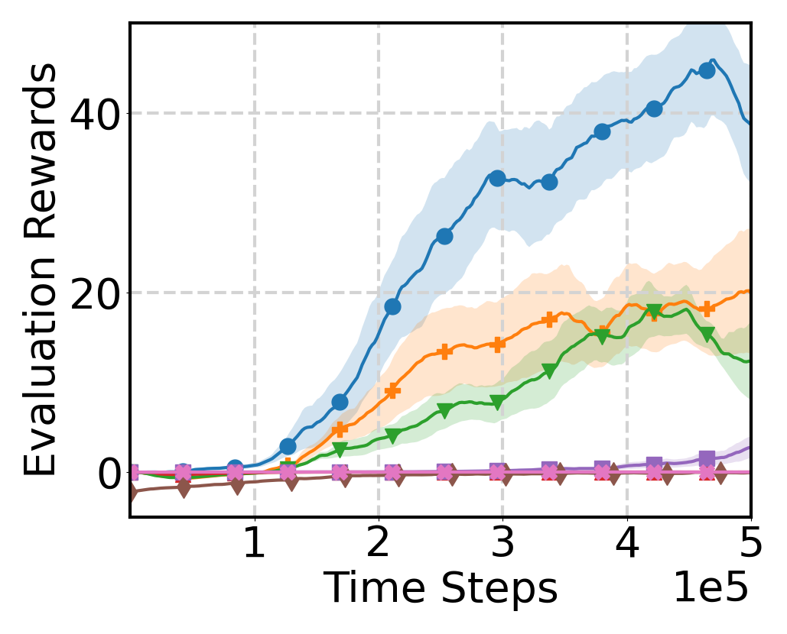
(e) Navigation
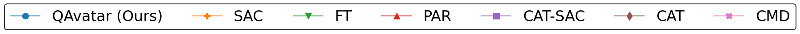
Time to Threshold
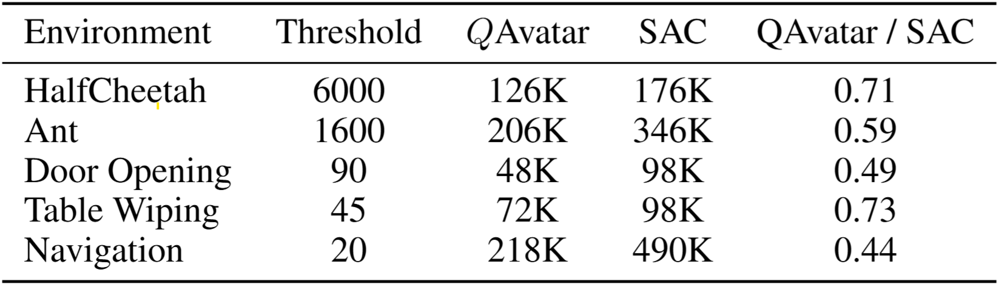
Aggregated IQM
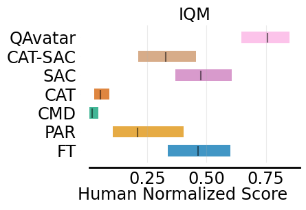
Ablation Study: Does $\alpha(t)$ Reflect Source Model Transferability?
Strong Positive/Negative Transfer
We consider a task where the source domain is standard 'Ant-v3' and the target changes the goal to move backward, with all else unchanged. Here, $Q_{\text{src}}$ and $Q_{\text{tar}}$ are adversarial due to opposite goals. We evaluate QAvatar in two scenarios: (a)
Learning state/action mapping: strong transferability exists, as Ant is symmetric along the front-back axis, allowing a perfect mapping. (b)
Fixing mapping as identity: a strong negative transfer case, since $Q_{\text{src}}$ provides adversarial reward signals. The results are shown in below, $Q$Avatar captures both positive transfer (high $\alpha(t)$) and negative transfer (low $\alpha(t)$), demonstrating that $\alpha(t)$ reflects transferability.
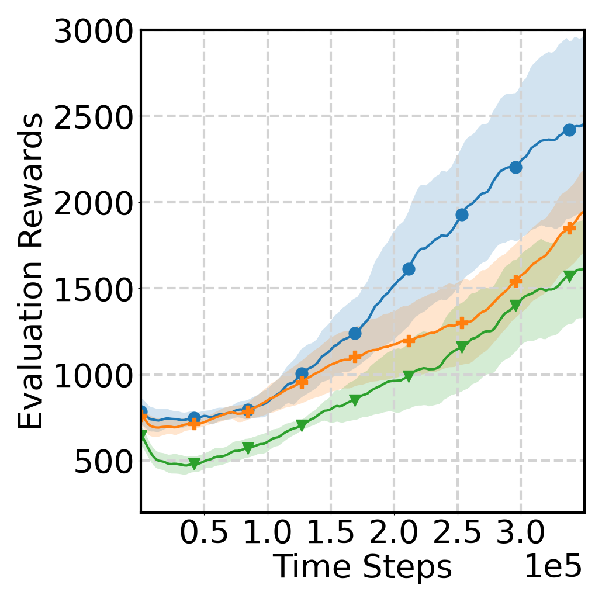
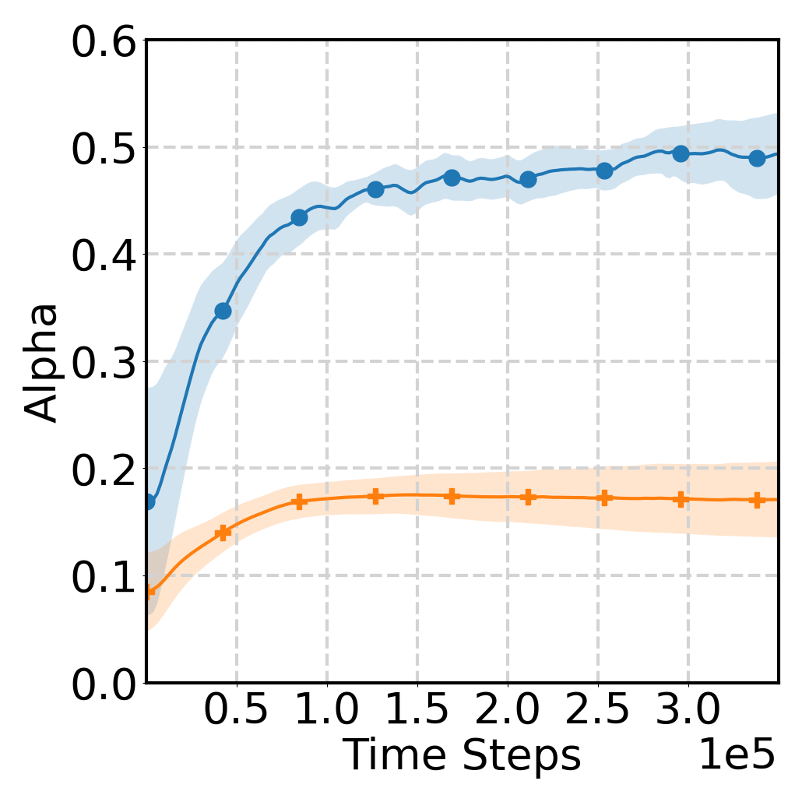
Source Model of Varying Quality
We evaluate a scenario with a source model of varying quality in the Cheetah environment. Specifically, we use a low-quality source model with a total return of 1000, compared with approximately 7000 for the expert. The learning process and $\alpha(t)$ of QAvatar are shown below. When the source model is of low quality, $\alpha(t)$ decreases to a small value by the end of training, thereby mitigating the effect of negative transfer.
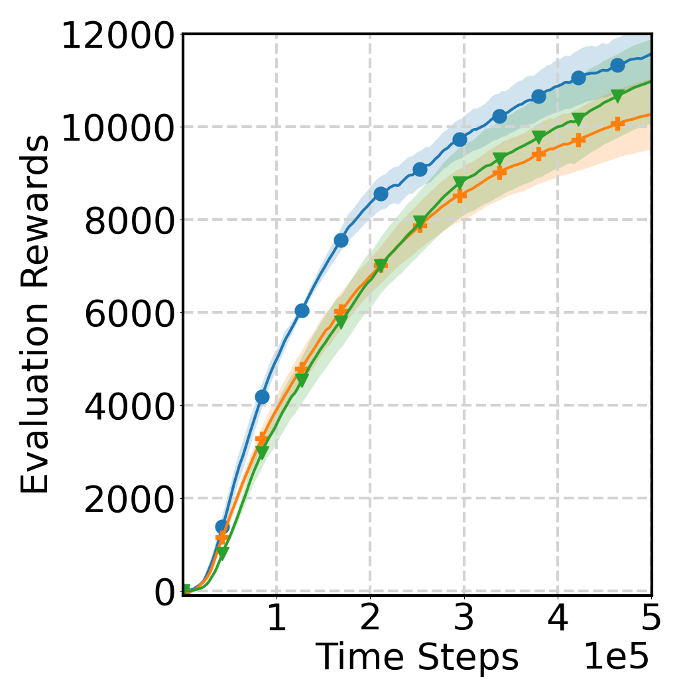
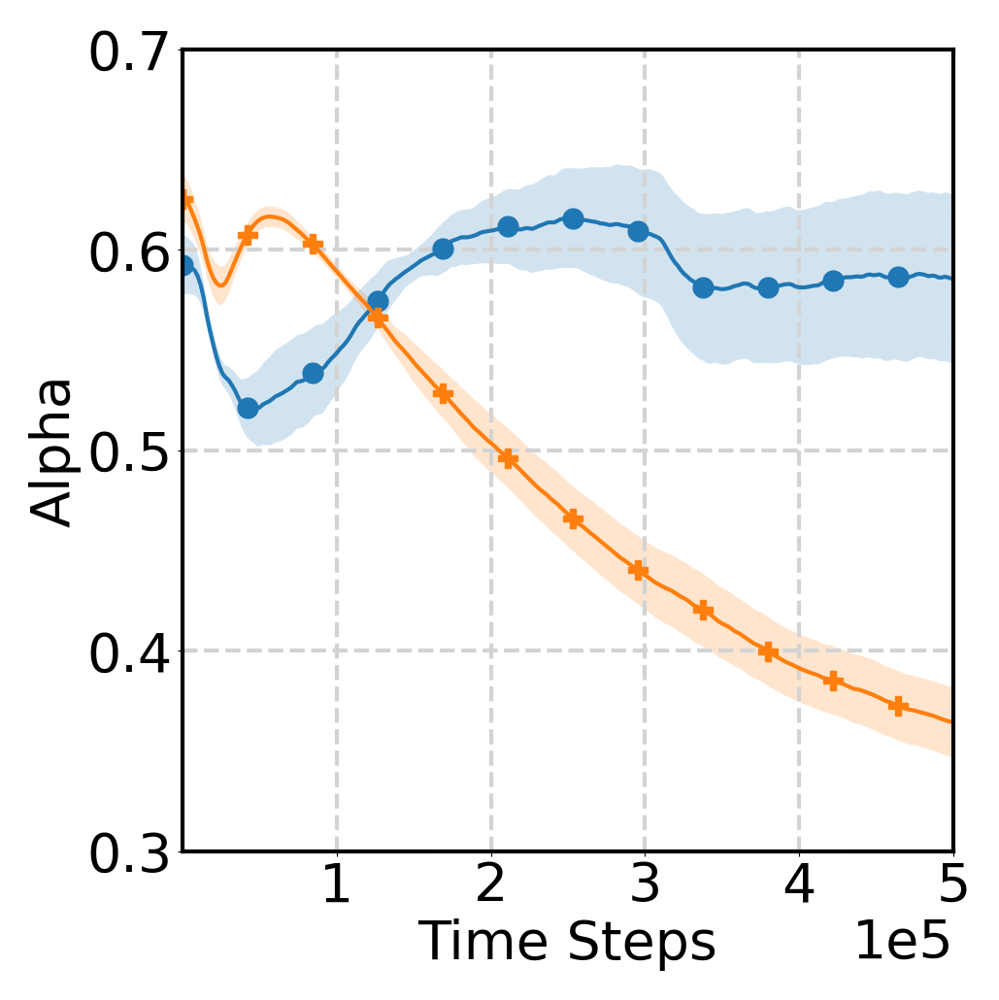
Citation
@inproceedings{
chen2026cross,
title={Cross-domain policy optimization via bellman consistency and hybrid critics},
author={Ming-Hong, Chen and Kuan-Chen, Pan and You-De, Huang and Xi, Liu and Ping-Chun, Hsieh},
booktitle={The Fourteenth International Conference on Learning Representations},
year={2026},
url={https://openreview.net/forum?id=kTXRFtWHnM}
}